The job hunt is noise.
Listings, tabs and alerts pile up faster than anyone can read them.
Listings, tabs and alerts pile up faster than anyone can read them.
Job Orbit turns a noisy job hunt into one route: your profile, the market, the roles worth your time and the evidence behind each step.
Listings, tabs and alerts pile up faster than anyone can read them.
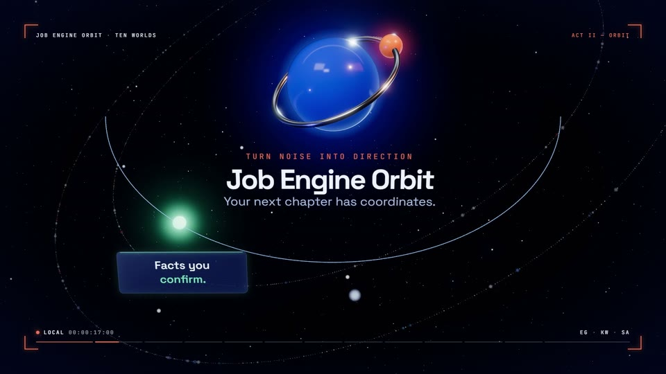
Job Orbit turns the scatter into one route you can follow.
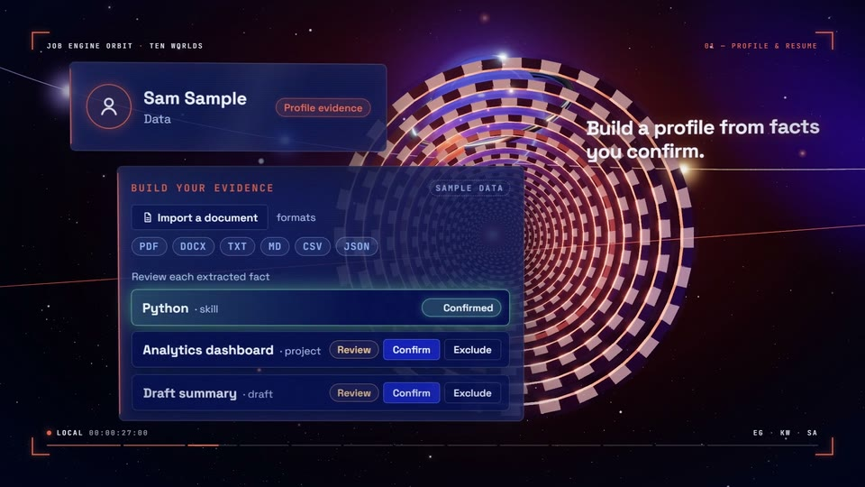
Your facts and your resume become the ground every search stands on.
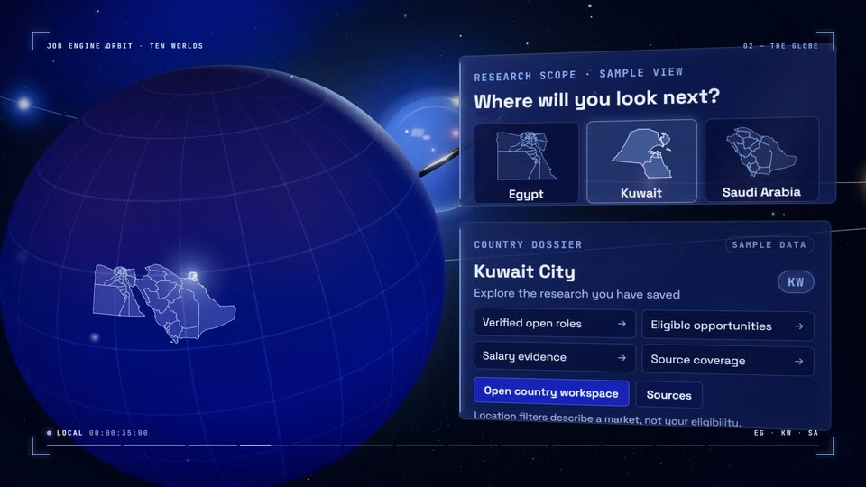
See where the openings are, market by market.
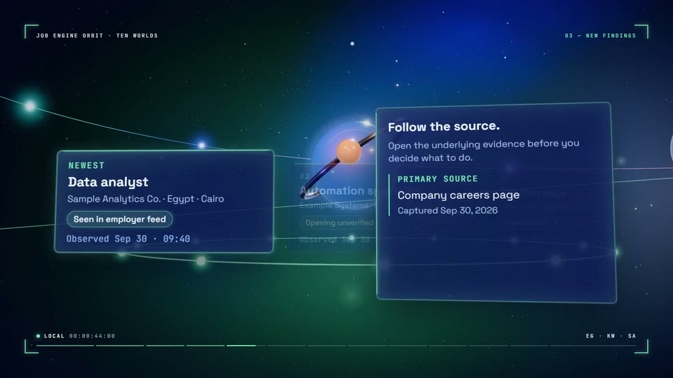
Fresh roles arrive with the evidence that surfaced them.
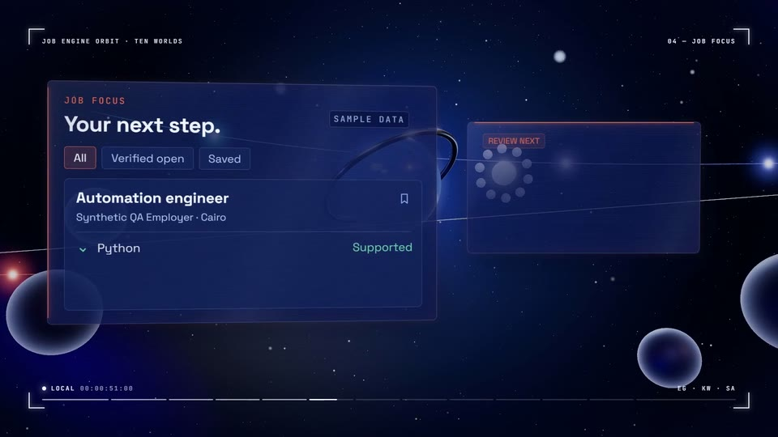
Open one role and keep its details, requirements and source together.
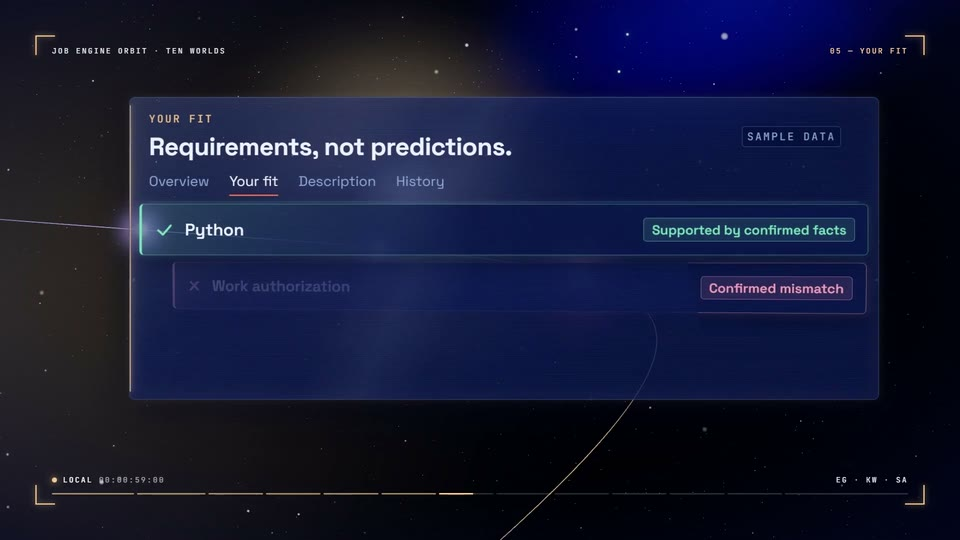
Compare a role with your profile, point by point.
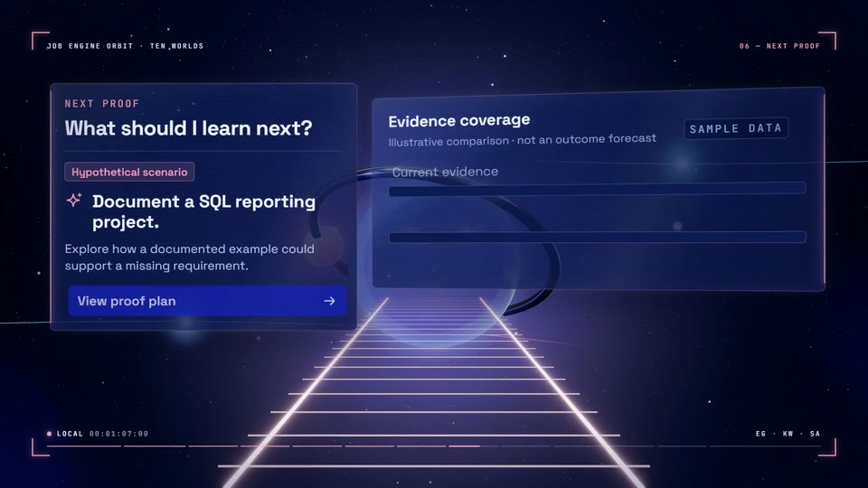
Find the next piece of evidence worth adding before you apply.
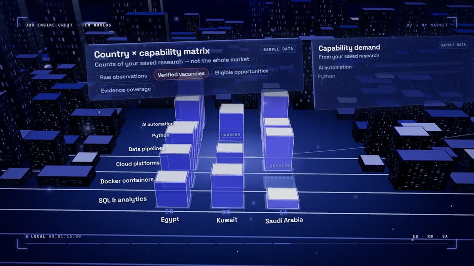
Read the market you are actually in.
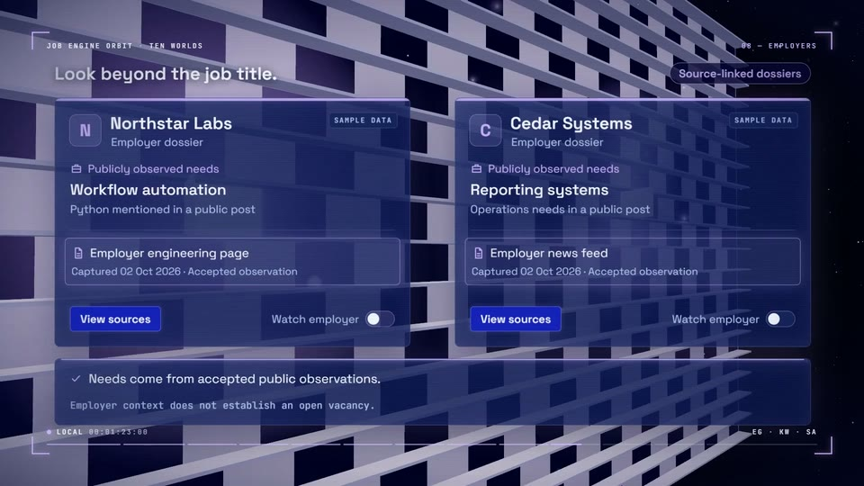
Follow the companies behind the openings.
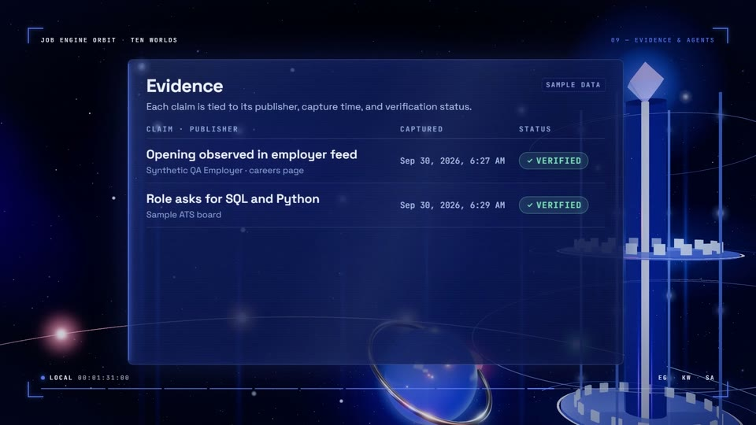
Agents gather and check; every claim keeps its source.
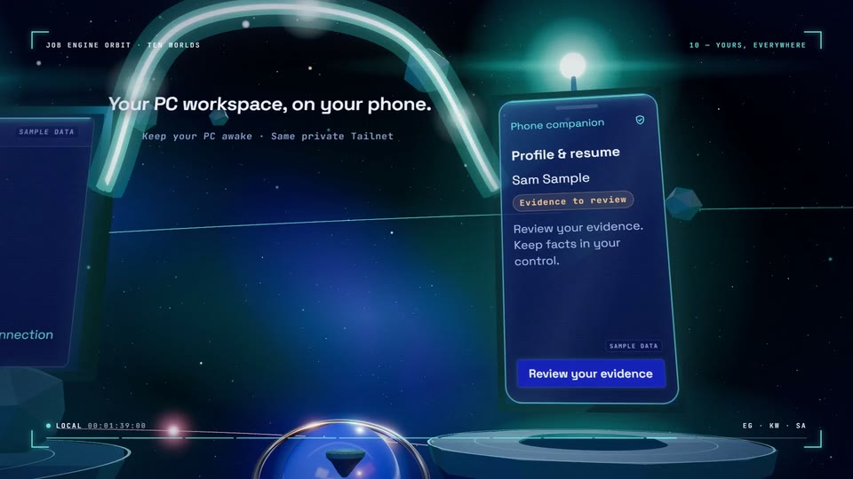
Pick up the same journey on another screen.
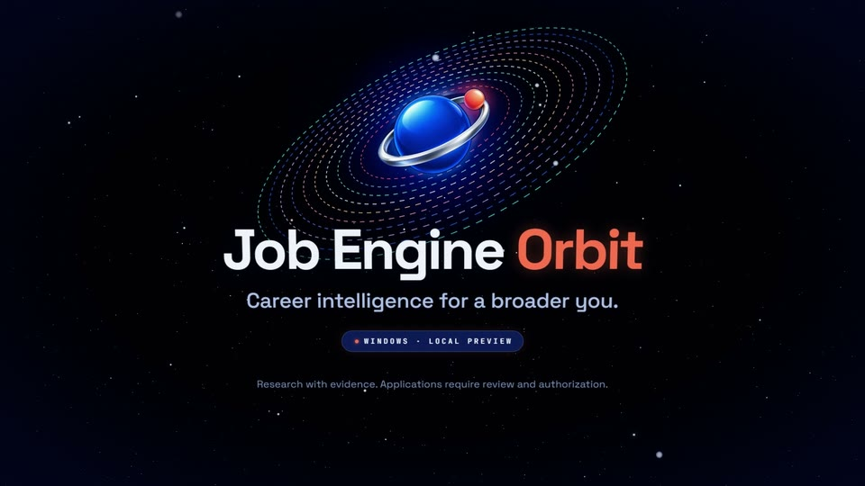
A clearer route to the next role.